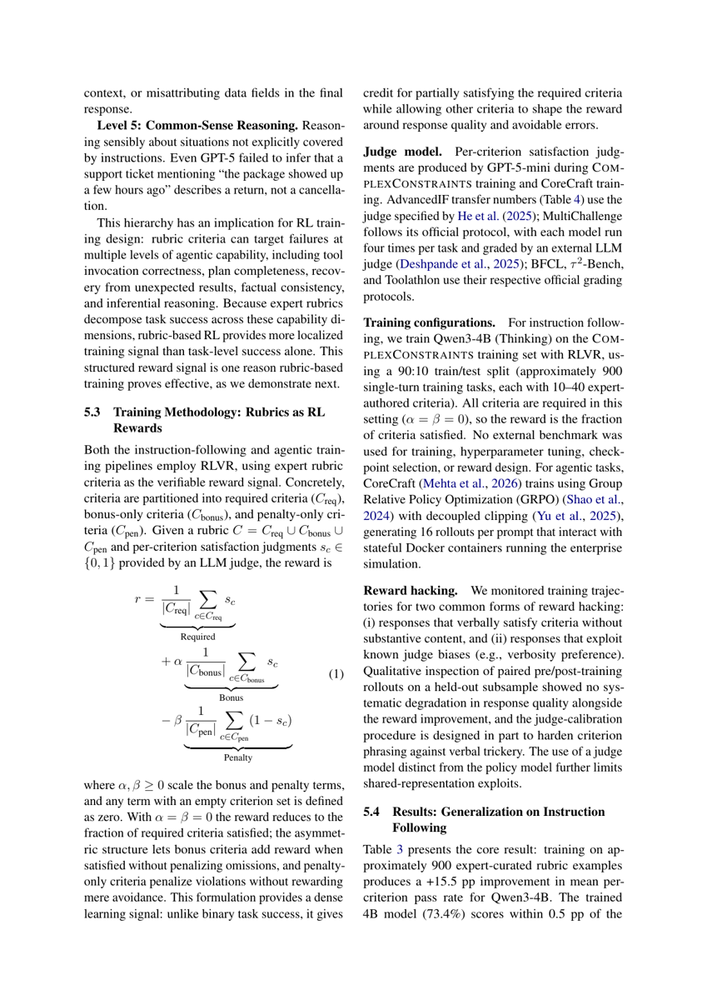
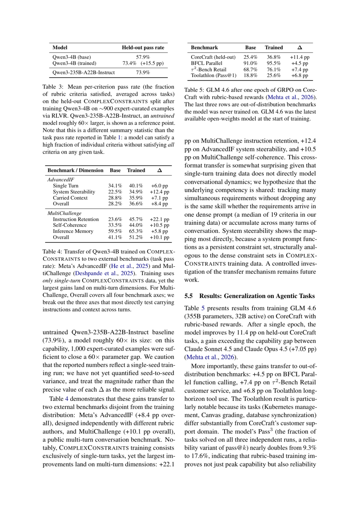
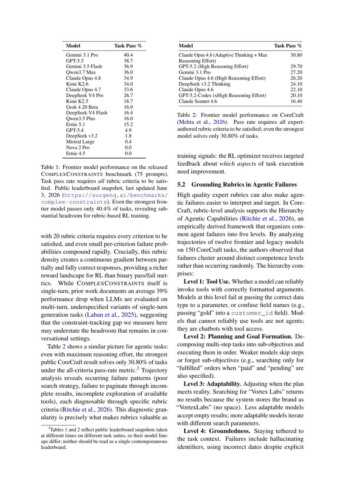

TL;DR. Surge AI vend l'idée que des rubriques écrites par des experts humains (10–40 critères atomiques par prompt, médiane 19) servent simultanément de benchmark et de reward RLVR ; une XP unique (Qwen3-4B, ~900 prompts) donne +15.5 pp in-distribution et transfère à AdvancedIF (+8.4 pp) et MultiChallenge (+10.1 pp).
Claim principal, formulé précisément. Sur la tâche « suivi d'instructions à forte densité de contraintes », un RLVR dont le reward est la fraction de critères de rubrique experte satisfaits, jugés par GPT-5-mini, appliqué à Qwen3-4B (Thinking) sur ~900 prompts, fait passer le mean per-criterion pass rate sur un held-out de 10 % de 57.9 % à 73.4 % (+15.5 pp), soit 0.5 pp sous un Qwen3-235B-A22B-Instruct non entraîné [Tab. 3], et ces gains transfèrent hors distribution sur deux benchmarks construits par d'autres équipes [Tab. 4].
⚠️ Trois réserves d'emblée, qui structurent tout le reste du mémo :
1. Le papier n'a aucune annexe (11 pages PDF, \end{document} ligne 337 de full.tex) : aucune rubrique n'est recopiée, aucun prompt de juge, aucun hyperparamètre.
2. L'algorithme RL de l'XP propre n'est pas nommé — seulement « with RLVR » [§5.3]. GRPO + decoupled clipping + 16 rollouts ne concerne que CoreCraft, et est attribué à mehta2026corecraft.
3. La question qui nous intéresse le plus — expert vs généré — n'est pas testée ici. Elle est traitée par citation (RubricBench, 27 pts) et par une comparaison explicitement non contrôlée avec RIFL.
Origine des tâches. 100 % humaines, écrites from scratch : « Prompts were authored from scratch by a workforce of domain experts spanning several task categories » [§4]. Pas de mining, pas de génération par modèle, pas de seed dataset. ⚠️ « workforce of domain experts » = la workforce annotateurs de Surge AI ; ni le profil, ni la qualification, ni le nombre de ces experts ne sont précisés — non précisé.
Pipeline de construction [§4, « Data construction »], trois étapes : 1. Draft authoring par un domain expert, incluant une reference response qui sert d'ancrage à l'écriture de la rubrique. 2. Rubric authoring écrite contre cette reference response (pas dans l'abstrait). 3. Independent review par un second expert ; adjudication par un senior reviewer en cas de désaccord. 4. Étape transverse : difficulty calibration par pilote contre un frontier model. 5. Étape transverse : LLM-judge calibration de chaque critère avant usage (détaillée §3 ci-dessous).
Volume. | Set | Prompts | Critères | Usage | |---|---|---|---| | Benchmark public | 75 | 1 559 (≈ 20.8/prompt) | mesure frontier, leaderboard | | Training set | 1 000 | non totalisé, 10–40/prompt, médiane 19 | RL [§5.3] | | dont train effectif | ~900 (split 90:10) | idem | [§5.3] | | dont held-out | ~100 | idem | [Tab. 3] |
Les deux sets sont disjoints et passent par le même pipeline [§4]. Tous les prompts sont single-turn [§4].
Distribution. Chaque critère est étiqueté sur deux axes : explicit vs implicit et objective vs subjective [§4]. ⚠️ Ces labels sont annoncés mais aucune distribution n'est donnée, et aucun résultat n'est ventilé par axe — c'est dommage, car « implicit × subjective » est exactement la case qui ressemble au juridique.
Catégories du training set [§4] : business writing 39 %, scheduling 22 %, data categorization 11 %, personal plans 10 %, numeric processing 7 %, creative writing 6 %, extraction 4 %. ⚠️ Somme = 99 % ; le 1 % restant n'est pas expliqué.
Types de contraintes visés [§4] : interdépendantes (multi-step), conditionnelles (ne se déclenchent que sous condition), planification (require thinking ahead), implicites (unstated).
Filtrage. Pas de filtrage par pass@k du modèle de base. Le mécanisme équivalent est un ciblage de difficulté à la main : « Because rubric authors evaluate frontier responses against their rubrics during construction, difficulty is tuned task by task into the band where the signal is most informative » [§3.4]. Aucun seuil numérique — non précisé.
Curriculum. Non précisé. Aucun ordre, mélange ni rééchantillonnage en cours d'entraînement n'est décrit.
Contamination / séparation train-test. Split 90:10 sur le training set [§5.3]. Benchmark de 75 prompts disjoint du training set [§4]. Déclaration explicite et utile : « No external benchmark was used for training, hyperparameter tuning, checkpoint selection, or reward design » [§5.3] — c'est la bonne pratique, et elle rend les +8.4 / +10.1 pp de transfert plus crédibles que la moyenne du domaine. ⚠️ Aucune analyse de contamination du modèle de base (Qwen3-4B) vis-à-vis d'AdvancedIF / MultiChallenge.
SFT/IFT avant RL. Non précisé — aucune mention de cold start, de SFT de format, ni de distillation de raisonnement. Le papier part directement de Qwen3-4B (Thinking).
Coût humain. ⚠️ Non précisé, et c'est le trou le plus gênant du papier. Le §6 (« Infrastructure Investment ») affirme « Expert rubric creation costs more, but our results demonstrate that this investment yields returns » — sans un seul chiffre : ni heures, ni coût par prompt, ni taille de la workforce, ni durée du projet. Aucune occurrence de $, hour, cost chiffré dans tout le .tex. Pour un papier écrit par une entreprise d'annotation dont c'est le métier, cette absence est difficile à lire autrement que comme un choix commercial.
Il faut distinguer deux environnements que le papier traite ensemble alors que un seul est le sien.
Ce n'est pas un environnement au sens agentique : c'est un dataset de prompts single-turn avec un reward dense.
mehta2026corecraft = arXiv 2602.16179)Tout ce que ce papier-ci en dit tient en une phrase [§5.3] : GRPO avec decoupled clipping, 16 rollouts par prompt, interagissant avec des conteneurs Docker stateful faisant tourner une simulation entreprise. Rien d'autre : ni liste d'outils, ni horizon, ni observation, ni reset, ni timeouts — non précisé ici (à chercher dans 2602.16179).
Le seul apport propre sur CoreCraft est une taxonomie de failure modes agentiques reprise de ritchie2026hierarchy (arXiv 2601.09032), dérivée de l'analyse de trajectoires de 12 modèles sur 150 tâches CoreCraft — Hierarchy of Agentic Capabilities [§5.2] :
| Niveau | Capacité | Échec type cité |
|---|---|---|
| 1 | Tool Use | mauvais type d'argument, confusion de champ (passer « gold » dans customer_id) |
| 2 | Planning & Goal Formation | chercher seulement les commandes « fulfilled » quand « paid » et « pending » sont aussi demandées |
| 3 | Adaptability | « Vortex Labs » ne renvoie rien car le système stocke « VortexLabs » ; le modèle faible accepte le résultat vide |
| 4 | Groundedness | hallucination d'identifiants, dates incorrectes malgré le contexte, mauvaise attribution de champs |
| 5 | Common-Sense Reasoning | GPT-5 n'infère pas qu'un ticket « the package showed up a few hours ago » décrit un retour et non une annulation |
⚠️ Cette hiérarchie est descriptive, pas validée : « empirically derived », mais aucune métrique d'inter-annotator agreement sur l'assignation des échecs aux niveaux, aucune ventilation quantitative. Elle est néanmoins l'objet le plus directement réutilisable du papier pour structurer une rubrique agentique (voir §9).
Rubrique experte + LLM-as-judge par critère. Hybride au sens où le vérifieur est un LLM mais le contenu du test est humain. Pas d'exact match, pas d'exécution de tests, pas de reward model appris.
Critères partitionnés en trois ensembles : C_req (required), C_bonus (bonus-only), C_pen (penalty-only). Jugements binaires s_c ∈ {0,1} par un juge LLM.
1 1 1
r = ———— Σ s_c + α · ———————— Σ s_c − β · ———————— Σ (1 − s_c)
|C_req| c∈C_req |C_bonus| c∈C_bonus |C_pen| c∈C_pen
\_____________/ \________________/ \________________/
Required Bonus Penalty
avec α, β ≥ 0, et tout terme dont l'ensemble de critères est vide est défini comme nul.
Lecture de la structure asymétrique [§5.3] : les bonus ajoutent du reward quand satisfaits mais ne pénalisent pas l'omission ; les penalty-only pénalisent la violation mais ne récompensent pas la simple abstention. C'est exactement la distinction qu'on veut en droit entre « a cité la bonne jurisprudence » (bonus) et « a inventé une citation » (penalty).
Dans l'XP ComplexConstraints : α = β = 0 [§5.3]. Donc le reward effectif est la fraction plate de critères satisfaits, tous les critères étant required. ⚠️ La structure bonus/penalty, présentée comme une contribution conceptuelle, n'est donc jamais utilisée ni évaluée. Le papier le reconnaît à demi-mot en conclusion : « broader study of asymmetric reward shaping remain natural next steps » [§7].
Outcome, mais dense. Crédit partiel par construction. Agrégation = moyenne non pondérée sur les critères. ⚠️ Aucune pondération inter-critères : un critère « inclure un email adressé au service » pèse autant qu'un critère « le total à exclure est 3 h 40 ». C'est le défaut le plus structurel de la recette pour le juridique, où les critères n'ont pas du tout la même gravité.
L'argument de densité est explicite [§3.4, §5.6] : « a response satisfying 28 of 30 criteria receives meaningfully more reward than one satisfying 15 », et comme le task pass exige tous les critères, le succès complet reste rare même pour les frontier models → le gradient vit dans la zone partielle.
Aucun. Pas de reward de format, pas de pénalité de longueur, pas de bonus. ⚠️ Remarquable : les auteurs citent eux-mêmes le verbosity bias du juge comme risque de hacking [§5.3] mais n'ajoutent aucune pénalité de longueur et ne rapportent aucune courbe de longueur de réponse.
GPT-5-mini, pour ComplexConstraints et CoreCraft [§5.3]. Les benchmarks de transfert utilisent chacun leur protocole officiel : AdvancedIF le juge de he2025advancedif ; MultiChallenge son protocole officiel (4 runs par tâche, juge LLM externe) ; BFCL / τ²-Bench / Toolathlon leurs protocoles officiels.
Prompt du juge : non précisé. Pas d'annexe, pas de prompt, pas de template de rubrique, pas de température, pas d'ensembling, pas de nombre d'appels. ⚠️ Pour un papier dont la thèse est « le juge calibré est la défense contre le hacking », ne pas publier le prompt du juge est une omission lourde.
Maximum Viable Atomicity [§3.1]. Contre la doctrine standard « un critère = une chose » : appliquée littéralement, l'atomicité dégrade le signal. Les critères visent « the smallest meaningful unit ». Justification RL explicite : « the distinction determines whether the gradient points toward correct answers or toward responses that are confidently wrong in superficially similar ways ». ⚠️ Aucun critère opérationnel pour trancher « meaningful », aucune mesure de l'effet — c'est une heuristique d'atelier, pas un résultat.
Intent over Literalism [§3.2]. Procédure concrète et transposable : avant d'écrire un critère, l'auteur lit plusieurs réponses de modèle au prompt puis reformule l'intention de l'utilisateur dans ses propres mots — le « quoi » et le « pourquoi » — et écrit les critères contre cette reformulation. Exemple donné : un utilisateur demande « help improving my Spanish » tout en résumant couramment un article d'économie en espagnol ; une rubrique littérale récompense des listes de vocabulaire débutant. Le papier note le risque spécifiquement RL : « Used as a reward, the failure compounds beyond a single misgraded response: the rubric systematically trains the model to privilege surface phrasing over context. »
Calibrating the Judge [§3.3]. La boucle la plus directement copiable du papier. Chaque critère est validé contre le verifier LLM avant déploiement : - l'auteur rédige le critère, - note à la main une reference response, - vérifie que le verifier est d'accord, - en cas de désaccord, diagnostique si la formulation est réellement ambiguë et la révise, - étape adverse : l'auteur édite la réponse pour que le verdict correct bascule, et confirme que le verdict du verifier bascule avec lui (test de sensibilité bidirectionnelle).
Exemple concret donné : un critère demandant à un poème d'« avoid alliteration » échouait parce que le verifier signalait « his heart » ; le correctif a été de spécifier l'allitération poétique, c'est-à-dire la répétition de consonnes initiales accentuées — après quoi l'accord était bidirectionnel. Deux autres règles accumulées : intégrer la réponse (answer key) directement dans les critères factuels pour que le juge vérifie au lieu de se souvenir ; décomposer tout critère trop large pour être noté de façon fiable.
Et la justification RL : « A noisy judge produces a noisy reward, and RL optimizers locate and exploit reward noise efficiently. Criterion calibration functions as a defense against reward hacking. »
Aucune mesure d'accord juge↔experts n'est rapportée dans ce papier. Pas de F1, pas de Cohen's κ, pas de taux de faux positifs / faux négatifs, pas de sous-échantillon ré-annoté. La boucle de calibration §3.3 est un processus qualitatif, auteur dans la boucle, sans statistique de sortie : on sait qu'elle a été appliquée, on ne sait pas ce qu'elle rend.
Les seuls chiffres de fiabilité du papier sont empruntés : le verifier RIFL finetuné atteint 0.728 de F1 d'accord avec des humains, contre 0.515 pour un juge LLM vanilla — cité de he2025advancedif [§6]. ⚠️ Ce chiffre ne dit rien sur GPT-5-mini appliqué aux rubriques ComplexConstraints. S'il fallait extrapoler, il suggérerait plutôt qu'un juge vanilla non finetuné (ce qu'est GPT-5-mini ici) tourne autour de 0.5 de F1 — c'est-à-dire que le reward de l'XP principale serait bruité à un niveau que les auteurs n'ont pas mesuré.
Conséquence directe sur le résultat phare : le held-out ComplexConstraints est noté par le même juge GPT-5-mini et les mêmes rubriques qui ont servi de reward. Le +15.5 pp est donc partiellement « le modèle apprend à plaire à GPT-5-mini sur ce format ». Les auteurs ne discutent pas cette circularité. ⚠️ Seuls les chiffres de transfert (AdvancedIF, MultiChallenge, jugés par des protocoles externes) constituent une preuve indépendante — et ce sont, heureusement, les plus intéressants.
Le vérifieur n'a pas été attaqué systématiquement. La seule chose qui s'en approche est l'étape adverse de la boucle de calibration (§3.3), qui teste la sensibilité du juge critère par critère au moment de la construction — pas sa résistance à une politique optimisée contre lui. Voir §5.
Le papier ne contient aucun exemple de rubrique (pas d'annexe). L'exemple ci-dessous est recopié du leaderboard public https://surgehq.ai/benchmarks/complex-constraints, consulté le 2026-09-30. Il n'est pas dans full.tex et ne doit pas être cité comme tel.
L'intérêt est direct pour nous : la tâche publique mise en avant est une tâche d'interprétation contractuelle — qualifier des stop-clock conditions d'un SLA à partir d'un journal d'incident horodaté, puis rédiger un email motivé distinguant les conditions valides des faux positifs. C'est structurellement une tâche juridique.
Prompt (extrait) : « I'm working on a set of service-outage reports about supposed violations to the Business SLA […] determine whether or not it is describing a scenario with a valid stop-clock-condition from amongst our company's list […] then write an email […] that addresses what service problem(s) occurred, why they occurred, which condition(s) have been met, and that this means the outage period must be excluded […] Make sure to include the total time that should be excluded. If there is a condition that looks like it might be valid at first but isn't due to any reason, you still need to include it in the email but it should be explicitly stated as an invalid reason and why. » — suivi des 15 stop-clock-conditions rédigées en langage contractuel (END-USER REQUEST, OBSERVATION, END-USER NOT AVAILABLE, WIRING, POWER, CUSTOMER PROVISIONING DELAY, ACCESS, STAFF, APPLICATION, CPE, NO RESPONSE, MAINTENANCE, THIRD PARTY, FORCE MAJEURE, CUSTOMER ENVIRONMENTAL) et d'un journal d'incident de 16 entrées horodatées (08:00 → 14:30).
Rubrique (15 critères, verdicts ✅/❌ d'une réponse de modèle affichés sur le site) :
| # | Critère | Verdict affiché |
|---|---|---|
| 1 | The response should state in the email that Stop-Clock-Condition #1 (END-USER REQUEST) is a valid condition that was met. | ✅ |
| 2 | The response should state in the email that the valid "END-USER NOT AVAILABLE (#3)" stop-clock condition covers the period from 13:20 to 14:30, for a total duration of 1 hour and 10 minutes. | ❌ |
| 3 | The response should state in the email that Stop-Clock-Condition #3 (END-USER NOT AVAILABLE) is a valid condition that was met. | ❌ |
| 4 | The response should explain in the email that the "POWER" condition is invalid because the hardware failure was later determined to be coming from the contractor's equipment (the SmartJack), rather than predominantly caused by the client's PDU outlet. | ❌ |
| 5 | The response should state in the email that the time periods covered by the valid stop-clock conditions should be excluded from the official downtime calculations. | ✅ |
| 6 | The response should state in the email that the valid "END-USER REQUEST (#1)" stop-clock condition covers the period from 11:45 to 13:00, for a total duration of 1 hour and 15 minutes. | ✅ |
| 7 | The response should state in the email that the cause of the service problem was a blown fuse in the SmartJack. | ✅ |
| 8 | The response should state in the email that Stop-Clock-Condition #7 (ACCESS) is a valid condition that was met. | ✅ |
| 9 | The response should state that the service problem is a Loss of Signal (LOS) at the SmartJack. | ✅ |
| 10 | The response should state in the email the total time to be excluded from the downtime calculation is 3 hours and 40 minutes. | ✅ |
| 11 | The response should state in the email that Stop-Clock-Condition #5 (POWER) is a condition that initially appeared valid but is ultimately invalid. | ❌ |
| 12 | The response should state in the email that the valid "ACCESS (#7)" stop-clock condition covers the period from 09:30 to 10:45, for a total duration of 1 hour and 15 minutes. | ✅ |
| 13 | The response should include an email addressed to the record keeping department, concerning the adjustment of downtime calculations for a service outage. | ✅ |
| 14 | The response should state in the email that Stop-Clock-Condition #4 (WIRING) is a condition that initially appeared valid but is ultimately invalid. | ✅ |
| 15 | The response should state in the email that the "WIRING" condition is invalid because the fault was later determined to be with the contractor's equipment (the SmartJack), not the client's wiring, which is a specific rule for that condition. | ✅ |
Ce que cet exemple apprend, et qui vaut plus que le reste du papier :
- Forme canonique : « The response should
⚠️ Section quasi vide dans le papier. C'est, avec le coût humain et la fiabilité du juge, le troisième trou majeur.
Algorithme.
- ComplexConstraints (l'XP propre) : « we train Qwen3-4B (Thinking) on the ComplexConstraints training set with RLVR » [§5.3]. L'algorithme n'est pas nommé. Ni GRPO, ni PPO, ni RLOO, ni rien. Non précisé.
- CoreCraft (par citation mehta2026corecraft) : GRPO [shao2024deepseekmath] avec decoupled clipping [yu2025dapo, c.-à-d. le clip-higher de DAPO], 16 rollouts par prompt, rollouts contre des conteneurs Docker stateful, une époque [§5.3, Tab. 5].
Hyperparamètres. Recherche exhaustive dans full.tex : aucune occurrence de learning rate, batch size, température de sampling, coefficient KL, modèle de référence, normalisation de l'advantage, bornes de clipping, longueur max de génération, nombre de steps, warmup, on/off-policy, ni stratégie de sélection de checkpoint. Tout est non précisé. Les seuls nombres liés à l'optimisation dans tout le papier sont : 16 rollouts/prompt et 1 epoch, tous deux pour CoreCraft et tous deux attribués à un autre papier.
Ce que l'on sait quand même :
- α = β = 0 pour ComplexConstraints, donc reward = fraction plate de critères [§5.3].
- Split 90:10 [§5.3].
- Modèle de base en mode Thinking [§5.3] — donc génération longue, mais aucune contrainte de longueur rapportée.
- Sélection de checkpoint : pas faite sur un benchmark externe [§5.3] ; sur quoi elle a été faite — non précisé.
Stabilité. Non précisé. Aucune instabilité rapportée, aucune astuce, aucun essai abandonné, aucun collapse d'entropie mentionné.
Compute. Non précisé. Aucun chiffre de GPU/TPU-heures, aucune durée, aucun coût d'inférence du juge (pourtant non trivial : ~19 appels de jugement × 900 prompts × N rollouts × M steps).
Dynamique. Aucune courbe. Le papier ne contient aucune figure (zéro \includegraphics, zéro environnement figure dans full.tex) : pas de courbe de reward, pas de longueur de réponse, pas d'entropie. Le seul élément dynamique est la phrase qualitative « no systematic degradation in response quality alongside the reward improvement » [§5.3].
⚠️ Évaluation. En l'état, la §4 de ce papier est irreproductible. Un lecteur ne peut ni répliquer l'XP, ni juger si le gain vient de la rubrique ou simplement du fait d'avoir fait du RL sur 900 prompts d'IF difficiles avec n'importe quel reward dense. C'est le format workshop qui explique sans doute la brièveté, mais l'omission du nom même de l'algorithme est au-delà de la contrainte de pages.
Un seul paragraphe, §5.3 « Reward hacking », recopié intégralement :
« We monitored training trajectories for two common forms of reward hacking: (i) responses that verbally satisfy criteria without substantive content, and (ii) responses that exploit known judge biases (e.g., verbosity preference). Qualitative inspection of paired pre/post-training rollouts on a held-out subsample showed no systematic degradation in response quality alongside the reward improvement, and the judge-calibration procedure is designed in part to harden criterion phrasing against verbal trickery. The use of a judge model distinct from the policy model further limits shared-representation exploits. »
Décomposé selon la grille comportement → détection → correction :
| Comportement cherché | Comment détecté | Correction | Résultat rapporté |
|---|---|---|---|
| (i) Satisfaction verbale sans contenu substantiel | Inspection qualitative de rollouts appariés pre/post sur un « held-out subsample » | Préventive : durcissement de la formulation des critères via la boucle de calibration [§3.3] | « no systematic degradation » |
| (ii) Exploitation de biais connus du juge (verbosité) | idem | Préventive : juge ≠ policy model | idem |
Défenses structurelles revendiquées ailleurs : la calibration adverse des critères [§3.3] ; la séparation juge/policy [§5.3] ; l'answer key embarquée dans les critères factuels [§3.3].
Le papier ne mesure aucun reward hacking, et son protocole n'est pas conçu pour en trouver. Plus précisément :
Aucune quantification. « Qualitative inspection », taille du sous-échantillon non précisée, nombre d'inspecteurs non précisé, critère de décision non précisé, aveuglement non précisé. « No systematic degradation » est une conclusion d'œil nu sur un échantillon de taille inconnue. Ce n'est pas une mesure négative, c'est l'absence de mesure.
Le test discriminant n'est pas fait. La signature du hacking de rubrique sous gradient est un décrochage entre le reward proxy et une évaluation indépendante : le per-criterion pass rate monte pendant que la qualité de fond stagne ou baisse. Le papier a tout ce qu'il faut pour le tester — il a un reward interne (GPT-5-mini + rubriques) et deux évals externes indépendantes (AdvancedIF, MultiChallenge) — mais ne rapporte aucune trajectoire des trois au fil de l'entraînement, seulement des points finaux. Un seul checkpoint mesuré des deux côtés ne peut pas montrer un décrochage.
Le risque spécifique de ce reward n'est pas nommé. Avec α = β = 0 et une moyenne plate, la politique optimale sous budget est de maximiser la couverture des critères les moins coûteux — les critères de forme et de structure (« inclure un email adressé au service ») — et de traiter les critères de fond (« le total est 3 h 40 ») comme des bonus. L'exemple public du §3 montre précisément une réponse qui rate 4 critères sur 15, tous des critères de raisonnement de fond (qualification #3, #4, #11, et la période associée #2), tout en passant tous les critères de forme. Sur 900 prompts et N steps, c'est exactement la pression de sélection qu'on redoute. Le papier ne mesure pas la ventilation du gain par type de critère — alors même qu'il a étiqueté chaque critère explicit/implicit et objective/subjective [§4]. Cette ventilation aurait été l'ablation décisive, et elle n'est pas faite.
Le mode « verbosité » est le moins contrôlé. Le modèle est en mode Thinking, il n'y a aucune pénalité de longueur, et aucune longueur de réponse n'est rapportée avant/après. Comme le reward est une fraction de critères couverts, allonger et structurer la réponse augmente mécaniquement la couverture sans coût. Les auteurs listent la verbosité comme risque puis ne fournissent ni métrique ni pénalité.
Les défenses revendiquées sont réelles mais mal placées. La calibration adverse §3.3 durcit un critère contre un éditeur humain, au moment de la construction. Elle ne dit rien de la résistance d'une rubrique entière à une politique optimisée pendant des milliers de steps. Ce sont deux menaces différentes, et le papier traite la seconde en invoquant la première.
Verdict sur ce point : le papier ne rapporte aucun cas de reward hacking, et cette absence n'est pas crédible comme preuve d'absence, compte tenu de (a) la conception plate du reward, (b) l'absence de terme de longueur, (c) un juge non validé, (d) un protocole de détection purement qualitatif et non dimensionné. Elle est en revanche parfaitement compatible avec un entraînement court (l'XP CoreCraft est à 1 époque ; la durée de l'XP IF est non précisée) : sur un horizon court, le hacking n'a souvent pas le temps d'émerger. ⚠️ Il faut lire ce papier comme ne se prononçant pas sur le hacking de rubrique sous gradient, pas comme l'infirmant.
Positifs, rapportés qualitativement sur CoreCraft [§5.5], donc par citation de mehta2026corecraft, trois catégories : meilleure exécution de workflows multi-étapes (décomposition et séquencement corrects) ; meilleure gestion des contraintes (filtrage temporel, application de politiques) ; meilleure qualité de réponse (communication structurée, professionnelle). ⚠️ « higher response quality (structured, professional communication) » est la même chose qu'un gain de verbosité structurée vu sous un angle favorable ; sans mesure de longueur, les deux lectures sont indiscernables.
Second signal positif, plus solide car quantitatif : sur Toolathlon, le Pass³ (fraction des tâches résolues aux 3 runs indépendants) passe de 9.3 % à 17.6 % [§5.5, cité de mehta2026corecraft] — un gain de fiabilité, pas seulement de pic. Un modèle qui hackerait un juge ne gagnerait pas nécessairement en consistance sur un benchmark noté par un protocole tiers ; c'est l'argument anti-hacking le plus fort du papier, et il vient d'un autre papier.
Quasiment rien.
⚠️ Le papier plaide un ROI (« costs more, but […] yields returns ») sans chiffrer ni le coût ni le retour en unités comparables. Pour nous, dont la question est précisément « combien d'heures de juriste senior pour combien de points », c'est le dividende manquant.
| Chiffre annoncé | Où il est annoncé | Source dans le papier | Verdict |
|---|---|---|---|
| Benchmark public de 75 prompts, 1 559 critères | abstract, intro, §7 | §4 ¶1 + note de bas de page | confirmé |
| Training set disjoint de 1 000 prompts | abstract, §7 | §4 ¶1 | confirmé |
| 10–40 critères atomiques par prompt | abstract, intro, §7 | §4 ¶1 (médiane 19 ajoutée) | confirmé |
| +15.5 pp de mean criterion pass rate sur held-out (4B) | abstract | Tab. 3 : 57.9 % → 73.4 % | confirmé (arithmétique exacte) |
| Arrive à 0.5 pp d'un Qwen3 ~60× plus gros non entraîné | abstract, §5.4 | Tab. 3 : 73.4 vs 73.9 | confirmé sur le chiffre, mais sur-généralisé sur la portée : vrai uniquement sur le mean per-criterion pass rate, in-distribution, noté par le juge et les rubriques qui ont servi de reward. Sur le task pass rate (métrique du leaderboard, Tab. 1), aucune comparaison n'est fournie. |
| +8.4 pp sur AdvancedIF | abstract, §5.4, §5.6 | Tab. 4 : 28.2 % → 36.6 % | confirmé |
| +10.1 pp sur MultiChallenge | abstract | Tab. 4 : 41.1 % → 51.2 % | confirmé |
| « In CoreCraft, rubric-reward RL likewise transfers (+4.5 BFCL, +7.4 τ²-Bench, +6.8 Toolathlon) » | abstract | Tab. 5 : 91.0→95.5 ; 68.7→76.1 ; 18.8→25.6 | chiffres confirmés, mais sur-généralisé sur l'attribution : la légende de Tab. 5 attribue l'intégralité de ces résultats à \citep{mehta2026corecraft} (arXiv 2602.16179). Ce ne sont pas des expériences de ce papier. L'abstract et l'intro (« Third, we present empirical evidence ») les présentent comme la moitié de la contribution empirique. La seule XP propre du papier est le run Qwen3-4B. |
| « 1 000 expert-curated examples ont suffi à combler un écart de 60× » | §5.4 ¶1, §5.6 | Tab. 3 (légende) et §5.3 disent ~900 (split 90:10) | contredit : 900 vs 1 000. Écart de 10 % sur le chiffre même de data-efficiency qui porte le claim. |
| +11.4 pp sur CoreCraft held-out (GLM 4.6) | §5.5 | Tab. 5 : 25.4 % → 36.8 % | confirmé dans le tableau, mais cité de mehta2026corecraft |
| Gain supérieur à l'écart Sonnet 4.5 → Opus 4.5 (+7.05 pp) | §5.5 | aucun tableau ; cité de mehta2026corecraft |
introuvable dans ce papier (citation externe non vérifiable ici) |
| Pass³ 9.3 % → 17.6 % sur Toolathlon | §5.5 | aucun tableau ; cité de mehta2026corecraft |
introuvable dans ce papier (citation externe) |
| Meilleur frontier model à 40.4 % de task pass | §4, §5.1, §5.6, §6 | Tab. 1 (Gemini 3.1 Pro), snapshot leaderboard du 3 juin 2026 | confirmé dans le papier. ⚠️ Non reproductible aujourd'hui : le leaderboard live consulté le 2026-09-30 donne Gemini 3.1 Pro (High reasoning) à 43.7 % et un sommet à 51.9 % (GPT 6 Sol, Max reasoning). Le leaderboard est « continuously updated », donc ce n'est pas une contradiction — mais le claim « headroom substantiel » de §5.1 repose sur un instantané périmé en 4 mois. |
| 30.80 % sur CoreCraft (meilleur modèle) | §4, §5.1, §5.6 | Tab. 2 (Claude Opus 4.6, Adaptive+Max) | confirmé dans le tableau ; snapshot leaderboard, date non donnée |
| Écart de 27 points de précision entre rubriques humaines et générées | §5.6 | aucune mesure ; cité de zhang2026rubricbench |
introuvable dans ce papier — ⚠️ c'est le chiffre qui porte toute la thèse « expert > généré », et il est entièrement emprunté |
| RIFL : 6.7 pp sur AdvancedIF, contre nos +8.4 pp | §5.6 | cité de he2025advancedif |
introuvable dans ce papier ; les auteurs qualifient eux-mêmes la comparaison de « suggestive rather than controlled » (modèles de base et pipelines différents) — honnête, mais cela vide l'argument de sa force |
| RIFL verifier 0.728 F1 vs 0.515 pour un juge vanilla | §6 | cité de he2025advancedif |
introuvable dans ce papier |
| Chute de 39 % en multi-turn | §5.1 | cité de laban2025multiturn |
introuvable dans ce papier (citation de contexte) |
| 68 % des agents déployés ≤ 10 steps | §2 | cité de pan2025measuring |
introuvable dans ce papier (citation de contexte) |
| AdvancedIF : 1 600+ prompts, frontier ≈ 75 % | §2 | cité de he2025advancedif |
introuvable dans ce papier (citation de contexte) |
| Répartition des catégories du training set (39/22/11/10/7/6/4 %) | §4 | §4 ¶1 | confirmé, mais somme = 99 % ; 1 % non attribué |
Synthèse de 7.0. Aucun chiffre n'est faux. Mais la cartographie est frappante : sur 12 chiffres porteurs d'un claim, 7 proviennent d'autres papiers (mehta2026corecraft, he2025advancedif, zhang2026rubricbench), dont les deux qui soutiennent les thèses centrales « les rubriques expertes battent les rubriques générées » (27 pts) et « ça marche aussi en agentique » (CoreCraft). Le papier possède une expérience : un run Qwen3-4B mono-seed. Un contredit (900 vs 1 000) et deux sur-généralisé (portée du « 0.5 pp », attribution de CoreCraft) → la case coherence tombe.
| Benchmark | Métrique | Base | Entraîné | Δ | Indépendance du juge |
|---|---|---|---|---|---|
| ComplexConstraints held-out | mean per-criterion pass | 57.9 % | 73.4 % | +15.5 pp | ❌ même juge + mêmes rubriques que le reward |
| (référence) Qwen3-235B-A22B-Instruct, non entraîné | idem | — | 73.9 % | — | idem |
| AdvancedIF — Single Turn | task pass | 34.1 % | 40.1 % | +6.0 pp | ✅ juge de he2025advancedif |
| AdvancedIF — System Steerability | task pass | 22.5 % | 34.9 % | +12.4 pp | ✅ |
| AdvancedIF — Carried Context | task pass | 28.8 % | 35.9 % | +7.1 pp | ✅ |
| AdvancedIF — Overall | task pass | 28.2 % | 36.6 % | +8.4 pp | ✅ |
| MultiChallenge — Instruction Retention | task pass | 23.6 % | 45.7 % | +22.1 pp | ✅ protocole officiel, 4 runs/tâche |
| MultiChallenge — Self-Coherence | task pass | 33.5 % | 44.0 % | +10.5 pp | ✅ |
| MultiChallenge — Inference Memory | task pass | 59.5 % | 65.3 % | +5.8 pp | ✅ |
| MultiChallenge — Overall | task pass | 41.1 % | 51.2 % | +10.1 pp | ✅ |
| CoreCraft held-out (GLM 4.6) | rubric pass | 25.4 % | 36.8 % | +11.4 pp | cité de mehta2026corecraft |
| BFCL Parallel | — | 91.0 % | 95.5 % | +4.5 pp | idem |
| τ²-Bench Retail | — | 68.7 % | 76.1 % | +7.4 pp | idem |
| Toolathlon Pass@1 | — | 18.8 % | 25.6 % | +6.8 pp | idem |
C'est le point solide, et il est plus intéressant que le titre ne le laisse croire.
L'entraînement est exclusivement single-turn, et les plus gros gains tombent sur les dimensions multi-turn [§5.4] : - MultiChallenge Instruction Retention : +22.1 pp (le plus gros gain de tout le papier), - AdvancedIF System Steerability : +12.4 pp, - MultiChallenge Self-Coherence : +10.5 pp.
Hypothèse des auteurs, textuellement : « tracking many simultaneous requirements without dropping any is the same skill whether the requirements arrive in one dense prompt (a median of 19 criteria in our training data) or accumulate across many turns of conversation », et pour la steerability : « a system prompt functions as a persistent constraint set, structurally analogous to the dense constraint sets in ComplexConstraints training data » [§5.4]. Ils concluent honnêtement : « A controlled investigation of the transfer mechanism remains future work. »
⚠️ Mon évaluation. L'hypothèse est plausible et, si elle tient, c'est le résultat le plus actionnable du corpus pour nous : la densité de contraintes dans un prompt unique serait un substitut bon marché à la construction de données multi-turn. Construire du multi-turn annoté par experts est ce qui coûte le plus cher en juridique. Mais le papier ne la teste pas : il n'y a ni bras de contrôle « même RL, données à faible densité de contraintes », ni corrélation entre nombre de critères par prompt et gain de transfert — alors que la médiane de 19 et la plage 10–40 offraient une variable naturelle à exploiter. À répliquer avant d'y investir.
⚠️ Note de prudence sur l'ampleur : Qwen3-4B part de bases très basses sur ces axes (23.6 % en Instruction Retention, 22.5 % en System Steerability). Des gains de 12–22 pp depuis un plancher de ~23 % sont plus faciles à obtenir que depuis 60 %, et rien ne dit que la recette se comporte pareil sur un modèle frontier. Le seul point de scaling du papier (GLM 4.6, 355B) vient d'un autre papier.
Aucune. Zéro. Le papier énonce quatre décisions de design (§3.1–3.4) et n'en isole aucune. Les auteurs l'écrivent en conclusion : « Open questions, including controlled isolation of which design decisions drive transfer and broader study of asymmetric reward shaping, remain natural next steps » [§7].
Manquent notamment, par ordre d'importance pour nous : 1. Expert vs rubriques générées, à juge et pipeline fixés — le bras qui justifierait le titre. Absent. 2. Reward de rubrique vs reward dense alternatif (préférence, RM) — absent. 3. Effet de la densité (10 vs 40 critères) — absent, alors que la donnée existe. 4. Gain ventilé par label explicit/implicit et objective/subjective — absent, alors que les labels existent. C'était aussi le test de hacking (§5). 5. Effet de la calibration du juge (§3.3) sur le reward final — absent. 6. α, β ≠ 0 — jamais essayé.
| Case | Verdict | Une ligne |
|---|---|---|
| baselines | ✅ | Comparaison appariée honnête : même modèle de base entraîné/non entraîné, modèles de génération courante (Qwen3-4B / Qwen3-235B-A22B), benchmarks de transfert notés par leurs protocoles officiels, et déclaration explicite qu'aucun benchmark externe n'a servi au tuning ou à la sélection de checkpoint [§5.3]. |
| ablation | ❌ | Aucune ablation, les auteurs le reconnaissent [§7] ; en particulier le bras expert-vs-généré, qui porte le titre, est absent. |
| variance | ❌ | Single seed, reconnu explicitement [§5.4] : « we have not yet quantified seed-to-seed variance ». Aucun intervalle de confiance. |
| coherence | ❌ | 900 vs 1 000 sur le chiffre de data-efficiency ; résultats CoreCraft présentés dans l'abstract comme contribution et attribués en légende à un autre papier ; portée du « 0.5 pp » sur-généralisée (métrique per-criterion, in-distribution, juge non indépendant). |
| eval | ❌ | Le juge GPT-5-mini n'est jamais validé contre des humains ; le résultat phare est noté par le juge et les rubriques qui ont servi de reward (circularité non discutée) ; les seuls F1 cités (0.728 / 0.515) concernent un autre verifier dans un autre papier. Les évals de transfert, elles, sont propres. |
| repro | ❌ | Vérifié par HTTP le 2026-09-30 : le dataset annoncé CC-BY-4.0 à huggingface.co/datasets/surgeai/ComplexConstraints renvoie 401 et est absent de l'API datasets?author=surgeai, qui ne liste que surgeai/DAYJOB-healthcare et surgeai/DAYJOB-finance ; recherche HF « ComplexConstraints » → 0 résultat. Ni code, ni training set, ni poids, ni hyperparamètres. Seul le leaderboard répond (200). |
evidence = 1/6 — manquant : [ablation, variance, coherence, eval, repro].
À répliquer. Le papier est une note de position méthodologique avec une démonstration unique, pas une étude. Ce qu'il apporte réellement : - ✅ Une méthodologie d'écriture de rubriques expertes énoncée avec précision (§3.1–3.4, notamment la boucle de calibration adverse et la règle de l'answer key embarquée) — c'est la partie la plus utile, et elle ne dépend pas de la force des preuves. - ✅ Une formule de reward explicite avec structure required/bonus/penalty asymétrique (§5.3, Eq. 1), même si elle n'est utilisée que dans sa forme dégénérée α=β=0. - ✅ Un signal de transfert single-turn → multi-turn intrigant et, s'il tient, très économique pour nous. - ❌ Une seule XP, un seul seed, zéro ablation, juge non validé, algorithme non nommé, dataset annoncé public mais non publié, et la moitié des résultats de l'abstract empruntée à un autre papier de la même équipe.
⚠️ Lecture d'ensemble : c'est un papier d'entreprise d'annotation (Surge AI), dont la thèse — « l'annotation experte vaut son prix » — est aussi son modèle d'affaires. Cela ne le disqualifie pas, la méthodologie §3 est de bonne facture et manifestement issue d'une vraie pratique. Mais cela explique pourquoi les chiffres qui valideraient la thèse (coût, accord juge-expert, expert vs généré) sont exactement ceux qui manquent, et pourquoi le dataset « public » ne l'est pas.
Le papier ne contient aucune figure : zéro \includegraphics et zéro environnement figure dans full.tex ; papers/2606.09118/figs/ était vide. Pages du PDF rendues à 150 dpi (pdftoppm -png -r 150) pour les trois tableaux porteurs.

Ce qu'il faut voir : toute la « méthode » du papier tient sur cette page. L'Eq. 1 avec ses trois termes required / bonus / penalty, et juste en dessous l'aveu queα = β = 0 dans l'XP — donc la moitié droite de la formule n'est jamais employée. À droite, « Training configurations » : on y lit que l'XP propre est décrite en deux phrases sans nommer l'algorithme RL, tandis que GRPO + decoupled clipping + 16 rollouts + Docker ne concernent que CoreCraft et renvoient à Mehta et al. 2026. En bas à droite, le paragraphe « Reward hacking » entier : cinq lignes, « qualitative inspection », aucun chiffre, aucune taille d'échantillon.

Ce qu'il faut voir : les trois tableaux de résultats du papier tiennent sur une page. Tab. 3, le résultat phare (57.9 → 73.4, à 0.5 pp d'un modèle 60× plus gros) — noter la légende qui prend soin de distinguer per-criterion de task pass rate, et le texte en dessous qui concède le single seed. Tab. 4, le vrai résultat : entraînement single-turn, plus gros gains sur les axes multi-turn (+22.1 pp Instruction Retention, +12.4 pp System Steerability). Tab. 5, à lire avec sa légende : « (Mehta et al., 2026) » — ces quatre lignes ne sont pas une expérience de ce papier.
Ce qu'il faut voir : le leaderboard ComplexConstraints (75 prompts, task pass = tous les critères) s'étale de 40.4 % à 0.0 % — c'est l'argument de « discriminant validity » du §6. ⚠️ Deux réserves visibles à l'œil : aucune entrée ne mentionne le reasoning effort, alors que le leaderboard live en fait un axe de premier plan (GPT-5.4 y figure à 4.9 % ici, et à 46 % avec xHigh reasoning sur le site au 2026-09-30) — le classement du tableau mesure donc en partie des configurations d'inférence, pas des modèles ; et la note de bas de page admet que Tab. 1 et Tab. 2 sont des instantanés pris à des dates différentes sur des suites différentes.| Ingrédient | Choix du papier | Équivalent juridique | Transfert | Ce qui manque |
|---|---|---|---|---|
| Source des tâches | Prompts écrits from scratch par une workforce d'experts ; 3 étapes (draft + reference response → rubrique → revue par un 2ᵉ expert, adjudication senior) [§4] | Consultations, memos, notes de synthèse, clauses à analyser, rédigés par des juristes seniors ; la reference response devient le memo de référence du juriste | direct — la structure à 3 étapes est reprenable telle quelle | Aucun chiffre de coût ni de débit. Rien sur le désaccord inter-experts (fréquence, résolution) — or en droit le désaccord entre deux seniors n'est pas du bruit, c'est le fond |
| Densité de contraintes | 10–40 critères, médiane 19, par prompt single-turn ; contraintes multi-step, conditionnelles, de planification, implicites [§4] | Une consultation réaliste porte facilement 15–30 exigences : qualification, base légale, jurisprudence, exceptions, juridiction, réserves, format de note | direct — c'est le profil naturel d'un livrable juridique | Aucune preuve que la densité cause le transfert (§7) |
| Forme des critères | « The response should |
« La réponse doit citer l'article L.1234-5 du Code du travail » ; « La réponse doit conclure que le délai de prescription est de 5 ans à compter du 12/03/2021 » ; « La réponse doit identifier que l'argument fondé sur X est inopérant, et expliquer pourquoi » | direct — c'est la découverte la plus immédiatement utile | Rien sur la maintenance des answer keys quand le droit évolue (revirement, réforme) : une rubrique avec clé embarquée devient fausse silencieusement |
| Vérifieur | GPT-5-mini, un appel binaire par critère, prompt non publié, accord avec les experts jamais mesuré [§5.3] | Gemini en juge par critère, sur rubriques de juristes | adaptable — mais il faut faire ce que le papier n'a pas fait | Tout le protocole de validation : κ juge↔juriste, taux de FP/FN par type de critère, et surtout la ventilation par type (un critère « cite l'article L.1234-5 » se vérifie à ~1.0 ; un critère « le raisonnement sur la proportionnalité est correct » beaucoup moins). Le prompt du juge n'est pas publié |
| Calibration adverse des critères | Boucle auteur↔verifier : noter à la main, vérifier l'accord, réviser si ambigu, puis éditer la réponse pour faire basculer le verdict correct et confirmer que le juge bascule aussi [§3.3] | Le juriste rédige le critère, note un memo de référence, puis produit une variante presque correcte (bonne conclusion, mauvais fondement ; bon article, mauvaise version) et vérifie que le juge la rejette | direct, et c'est le meilleur ingrédient (cf. ci-dessous) | Aucun coût par critère rapporté, aucune mesure du gain de fiabilité apporté par la boucle |
| Agrégation / reward | Moyenne plate des required ; structure bonus/penalty asymétrique définie mais jamais utilisée (α=β=0) [§5.3, Eq. 1] | En droit la pondération plate est inacceptable : rater la qualification juridique ≠ rater le format de la note | adaptable, avec modification obligatoire : pondérer, ou hiérarchiser (gating : si le critère de qualification échoue, plafonner le reward) | Le papier ne teste aucune pondération. Les termes penalty sont pourtant la forme naturelle pour les citations hallucinées : C_pen = {« aucune citation inexistante », « aucune norme abrogée invoquée »}, β élevé |
| Harness / outils | Aucun : single-turn, texte → texte, pas d'outils, pas de sandbox [§4] | Harvey LAB et Vals Legal Research Bench supposent recherche documentaire, citation, navigation de sources | non pour la partie IF ; la partie agentique existe (CoreCraft, Docker stateful) mais n'est pas décrite ici | Tout le harness agentique est dans arXiv 2602.16179 — à lire séparément |
| Algorithme | Non nommé pour l'XP propre ; GRPO + decoupled clipping + 16 rollouts pour CoreCraft, par citation [§5.3] | — | non transférable en l'état | Absolument tout : algo, KL, taille de groupe, advantage, clipping, LR, steps, longueur max, température, compute |
| Curriculum | Aucun curriculum en ligne. Substitut : calibration de difficulté à la main au moment de la construction, en évaluant des réponses frontier contre la rubrique [§3.4] | Calibrer chaque dossier pour que Gemini le passe partiellement : ni trivial, ni impossible | adaptable — mais à automatiser : la version manuelle ne passe pas à l'échelle sur du juriste senior | Aucun seuil (quel pass@k vise-t-on ?), aucun coût, aucun protocole de recalibration quand le modèle progresse |
| Anti-hacking | Préventif uniquement : critères durcis, juge ≠ policy, answer key embarquée. Détection : inspection qualitative non dimensionnée. Aucun cas rapporté, aucune mesure [§5.3] | — | non — il n'y a rien à transférer, seulement une leçon en creux | Le protocole de détection entier. Voir l'expérience minimale ci-dessous |
| Séparation train/test | Split 90:10 + déclaration explicite qu'aucun benchmark externe n'a servi au tuning ou à la sélection de checkpoint [§5.3] | Harvey LAB / Vals tenus hors de toute boucle de décision | direct — bonne pratique à copier telle quelle | Pas d'analyse de contamination du modèle de base |
La boucle de calibration adverse des critères [§3.3], et sa règle corollaire d'answer key embarquée.
Pourquoi elle plutôt que le reste : c'est le seul ingrédient du papier qui (a) est décrit assez précisément pour être exécuté, (b) attaque frontalement le problème qui nous bloque — un vérifieur sans vérité exacte — et (c) ne dépend pas de la force des preuves du papier, puisque c'est une procédure de construction, pas un résultat empirique.
Le mécanisme est subtil et vaut d'être explicité : en inscrivant la réponse dans le critère (« la réponse doit conclure que la prescription est de 5 ans à compter du 12/03/2021 »), on transforme la tâche du juge de juger du droit — ce dont un LLM généraliste est incapable de façon fiable — en vérifier la présence d'une proposition explicite — ce qu'il fait bien. L'expertise juridique est ainsi déplacée du temps d'inférence vers le temps de construction, une fois par tâche au lieu d'une fois par rollout. C'est exactement l'arbitrage économique dont nous avons besoin : le juriste senior est cher, le juge doit tourner des millions de fois.
Et le test adverse bidirectionnel (« édite la réponse pour que le verdict bascule, confirme que le juge bascule ») est la seule chose dans tout le corpus qui ressemble à un test unitaire du vérifieur, écrit au moment où l'expert a le contexte en tête. En droit, la variante adverse est facile à produire et diagnostique : bonne conclusion / mauvais fondement, bon article / version abrogée, bon raisonnement / mauvaise juridiction.
⚠️ À noter : le papier ne mesure jamais le gain apporté par cette boucle. On la transpose parce qu'elle est conceptuellement juste, pas parce qu'elle est démontrée. Notre réplication doit donc la mesurer.
Deux expériences, dans cet ordre.
XP 1 — Valider le vérifieur avant de valider quoi que ce soit d'autre (cheap, préalable obligatoire). Prendre 40 tâches juridiques réalistes, faire écrire par 2 juristes seniors une rubrique de 15–25 critères chacune selon les quatre règles §3.1–3.4, en appliquant la boucle adverse §3.3 sur la moitié des critères seulement (l'autre moitié écrite sans calibration, en aveugle). Puis mesurer, sur ~600 réponses de modèles variés notées à la fois par le juge et par un juriste : - κ et F1 juge↔juriste, ventilés par (calibré / non calibré) × (objectif / subjectif) × (explicite / implicite) ; - taux de faux positifs par type de critère.
Résultat attendu : accord élevé (F1 > 0.85) sur les critères objectifs à answer key embarquée, quel que soit le bras ; accord médiocre (F1 ~0.5–0.65, l'ordre de grandeur du juge vanilla de he2025advancedif) sur les critères subjectifs de raisonnement ; gain net de la calibration concentré sur les critères subjectifs. Si c'est ce qu'on observe, la conclusion opérationnelle est nette : n'utiliser comme reward que les critères dont le F1 dépasse un seuil, et garder les autres pour l'évaluation humaine uniquement. Le papier n'a pas fait cette mesure ; nous ne pouvons pas nous le permettre.
XP 2 — Le test de hacking que le papier n'a pas fait (le vrai enjeu). RLVR sur 300–500 tâches juridiques avec le reward rubrique, et tracer trois courbes au fil de l'entraînement, pas seulement à la fin : 1. le reward proxy (fraction de critères, juge LLM) ; 2. une éval externe non liée (Harvey LAB / Vals, tenue hors de toute boucle) ; 3. le reward proxy ventilé par type de critère — forme/structure vs raisonnement de fond, en utilisant les labels explicit/implicit et objective/subjective que Surge produit mais n'exploite jamais. Ajouter une mesure de longueur de réponse à chaque checkpoint.
Résultat attendu — et c'est là qu'on tranche : la courbe (1) monte de façon monotone ; la courbe (3) révèle que la montée est portée par les critères de forme et les critères explicites, tandis que les critères de fond et implicites saturent tôt ; la courbe (2) décroche de (1) après quelques centaines de steps ; la longueur augmente. Si ce décrochage apparaît, il faut (a) pondérer ou gater les critères de fond, (b) activer les termes C_pen avec β élevé sur les citations hallucinées, (c) arrêter tôt. Si le décrochage n'apparaît pas sur un horizon réaliste, alors le silence du papier sur le hacking était justifié — mais nous l'aurons su par mesure et non par inspection à l'œil.
Coût des deux : dominé par l'XP 1 (temps de juriste senior), qui est de toute façon un prérequis à toute construction d'environnement juridique.
Deux, liées.
Combien d'heures de juriste senior par tâche annotée sommes-nous prêts à payer, et pour combien de tâches ? Ce papier est écrit par une entreprise dont le métier est l'annotation experte, il plaide explicitement que « expert rubric creation costs more, but […] yields returns » — et ne donne aucun chiffre de coût. Avant de nous engager dans une recette expert-first, nous avons besoin du chiffre que Surge ne publie pas. Le point de référence utile est que ~900 prompts ont suffi ici ; si l'ordre de grandeur en droit est de 1 000 tâches × 20 critères, la question devient concrète et arbitrable.
Avons-nous accès à CoreCraft / DAYJOB (arXiv 2602.16179), ou à un accord avec Surge ? Toute la partie agentique de ce papier — celle qui ressemble le plus à Harvey LAB — est empruntée à ce papier-là, et l'équipe Surge (Mehta, Ritchie, Garre, Chen) publie manifestement une série cohérente (2601.09032 hierarchy, 2602.16179 corecraft, celui-ci). Leurs deux datasets réellement publics sur HF sont surgeai/DAYJOB-healthcare et surgeai/DAYJOB-finance — il n'y a pas d'équivalent juridique, ce qui est soit une lacune, soit une opportunité. À noter pour le volet « contacter » de synthese/groupes.md : ils annoncent un dataset CC-BY-4.0 qui n'est pas en ligne près de 4 mois après la v1, ce qui est un signal à prendre en compte dans toute discussion.